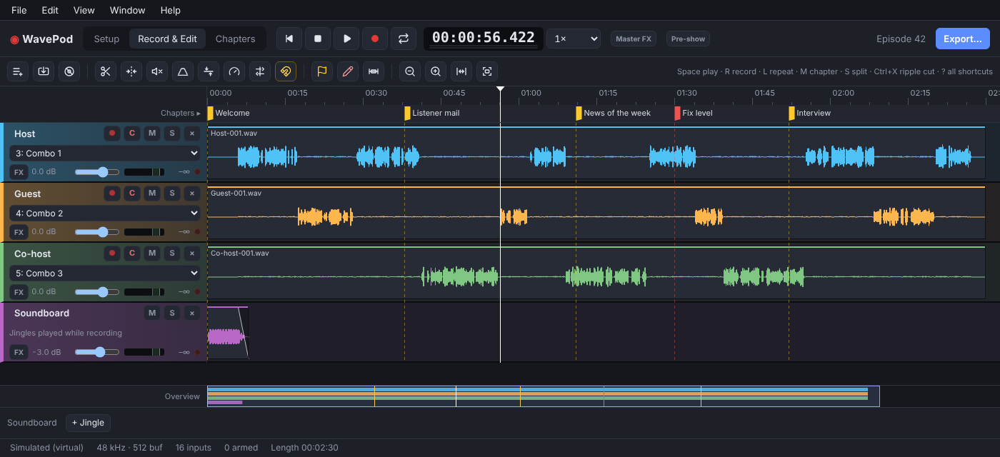
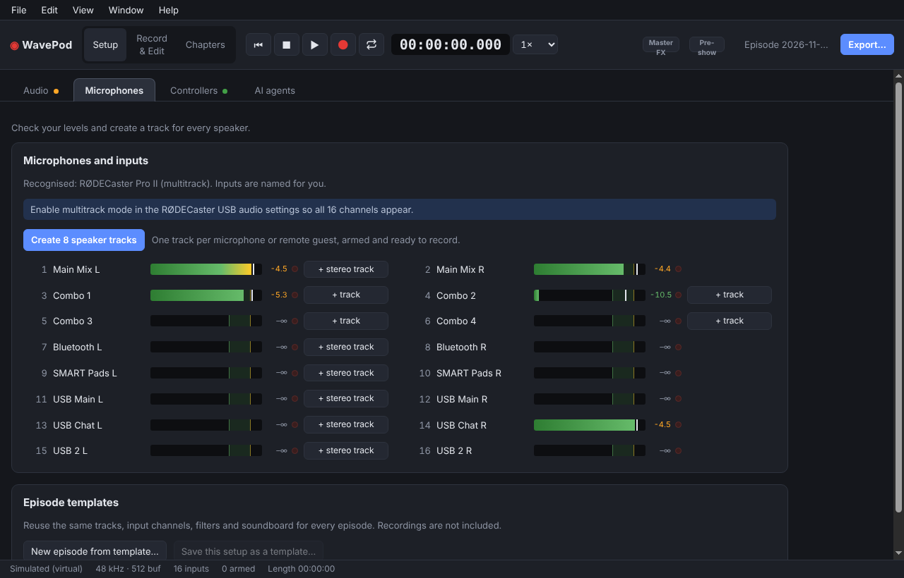
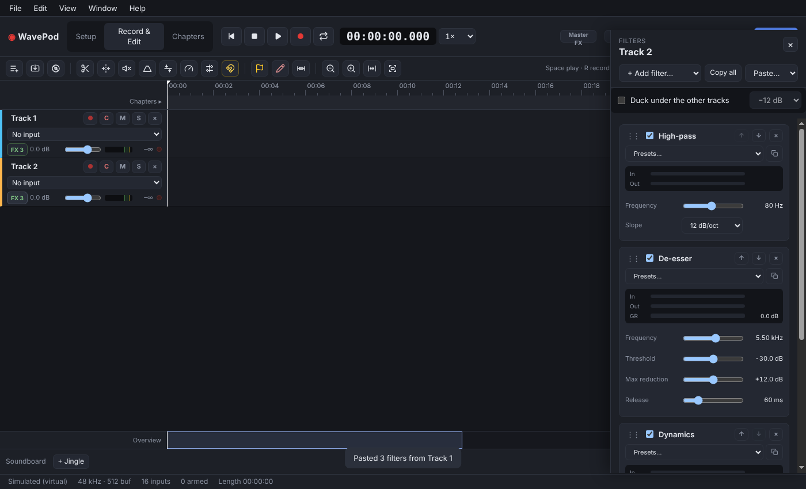
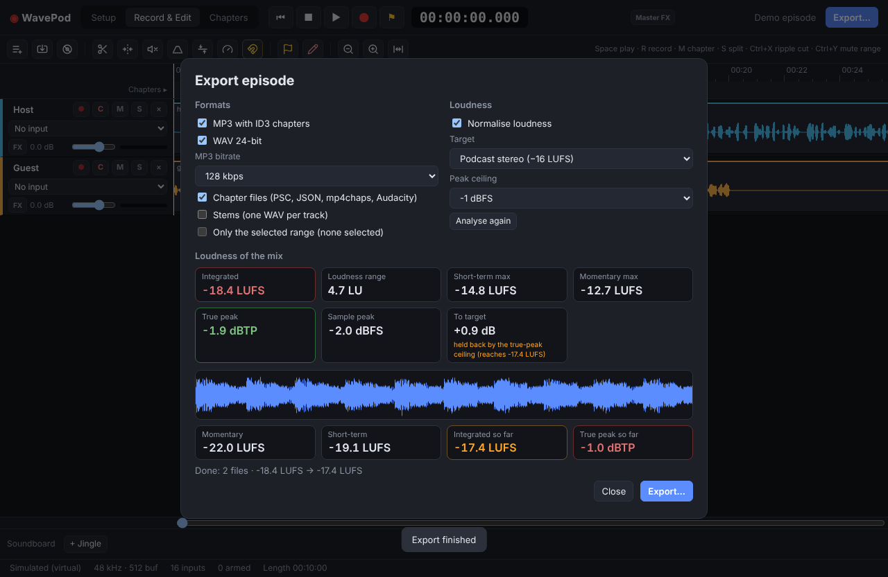
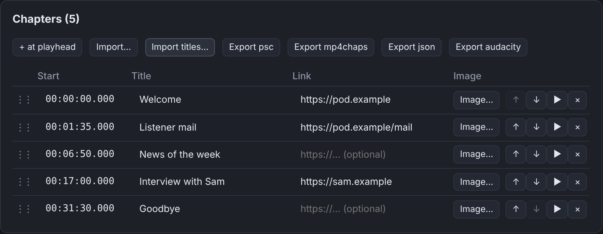

Every microphone on its own track
Records all 16 multitrack channels of a RØDECaster Pro II, and works with RØDECaster Duo, Zoom PodTrak, Focusrite and other class-compliant interfaces. Known devices are recognised and their inputs named for you.
WavePod is a simple multitrack recorder and editor made for podcasts. Plug in your RØDECaster or USB interface, get a track for every speaker in one click, and go from recording to a finished MP3 with chapters, without a full studio DAW.

Records all 16 multitrack channels of a RØDECaster Pro II, and works with RØDECaster Duo, Zoom PodTrak, Focusrite and other class-compliant interfaces. Known devices are recognised and their inputs named for you.
Crash-safe 16, 24 or 32-bit WAV, one file per track, with the waveform drawn live. If the app or the computer goes down mid-show, the take is recovered when you reopen the episode.
Split, trim, fade, ripple cut across all tracks, crossfades, volume lines and cough buttons. Tape-style scrubbing and zoom down to single samples when you need it.
High-pass, EQ, gate, compressor, de-esser, limiter, noise reduction and Dynamics on every track and the master, with presets tuned for speech. Your VST3 plug-ins work in the same stack.
Set chapter markers while recording (M), add titles, links and images later. EBU R128 analysis and loudness normalisation to −16 LUFS or your own target.
Export MP3 with ID3 chapters, WAV, Opus, stems and chapter files for Podlove, Podcasting 2.0, mp4chaps and Audacity, or send the mix to Auphonic.




Free builds for every release are on GitHub.
The builds are not code-signed yet. On macOS, right-click the app and
choose Open the first time; on Windows, choose
More info › Run anyway if SmartScreen asks. On Linux, make
the AppImage executable (chmod +x WavePod-*.AppImage).
Older versions and release notes are on the
releases page.